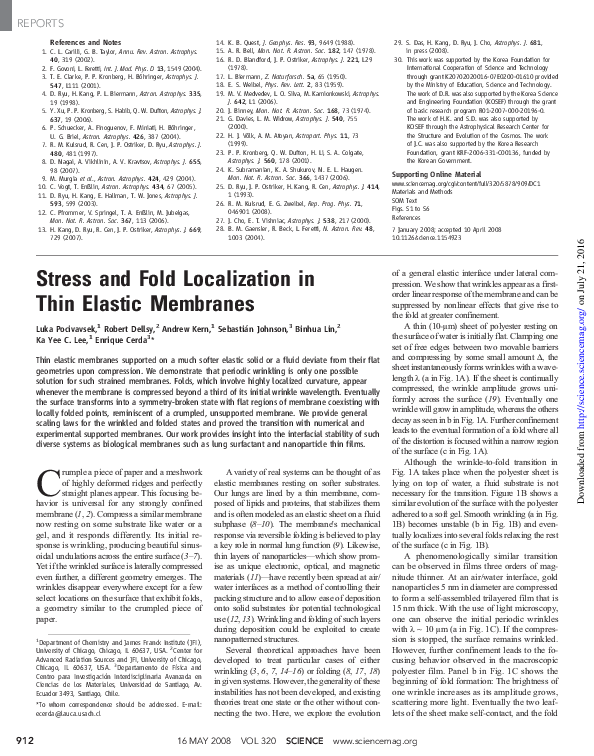

|

|
PocivavsekEtAl2008
|
Notes:
- Lovely experiment + scaling + some numerics paper (Science, so
brief) explaining the wrinkle to fold transition when membranes
are compressed while they're floating on sheets (or other substrates).
- Linear analysis predicts how wrinkle wavenumber and amplitude
depend on compression (confinement) of membrane.
- Fold begins to emerge when compression exceeds 30% of the wrinkle
wavelength.
- (Note: also added to Draga's FvK collection)
|